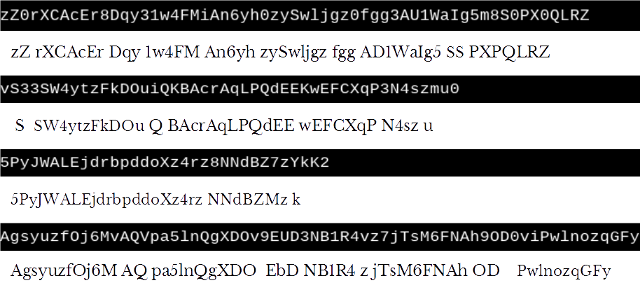

Deep Learning OCR using TensorFlow and Python
Sat, 14 Oct 2017
Computer Science, Data Science, Deep Learning, Machine Learning, Ocr, Python, Tensorflow
In this post, deep learning neural networks are applied to the problem of optical character recognition (OCR) using Python and TensorFlow. This post makes use of TensorFlow and the convolutional neural network class available in
the TFANN module. The full source code from this post is
available here.
Introduction to OCR
OCR is the transformation of images of text into machine encoded text. A simple API to an OCR library might provide a function which takes as input an image and outputs a string. The following pseudo-code illustrates how this might be used.
#...
img = GetImage()
text = ImageToString(img)
ProcessText(text)
#...
Figure 1 illustrates the OCR transformation.
Figure 1: The OCR Process
The left and right sides depict an image of text and a string representation of the text respectively.
Deep Learning Based OCR
Traditional OCR techniques are typically multi-stage processes. For example, first the image may be divided into smaller regions that contain the individual characters, second the individual characters are recognized, and finally the result is pieced back together. A difficulty with this approach is to obtain a good division of the original image. This blog post explores using deep learning to provide a simplified OCR system.
A fully convolutional network is presented which transforms the input volume into a sequence of character predictions. These character predictions can then be transformed into a string. The architecture of the network is shown below in Figure 2.
Figure 2: Deep OCR Architecture
Where \(N\) is the number of possible characters. In this example, there are 63 possible characters for uppercase and lowercase characters, digits, and a blank character. The parenthesized values in the convolutional layers are the filter sizes and stride values from top to bottom respectively. The values in the reshape layer are the reshaped dimension.
The input volume is a rectangular RGB image. This first height and width of this volume are reduced across the convolutional layers using striding. The 3rd dimension of this volume increases from 3 channels (RGB) to 1 channel for each character possible. Thus, the volume is transformed from an RGB image into a sequence of vectors. Applying
argmax across the channel dimension gives a sequence of 1-hot encoded vectors which can be transformed into a string.
Generating Data
To facilitate training this network, a dataset is generated using the Python Imaging Library (PIL). Random strings consisting of alphanumeric characters are generated. Using PIL, images are generated for each random string. A CSV file is also generated which contains the file name and the associated random string. Some examples from the generated dataset are shown below in Figure 3.
Figure 3: Generated Dataset Images
Code to generate the dataset follows.
import numpy as np
import string
from PIL import Image, ImageFont, ImageDraw
def MakeImg(t, f, fn, s = (100, 100), o = (16, 8)):
'''
Generate an image of text
t: The text to display in the image
f: The font to use
fn: The file name
s: The image size
o: The offest of the text in the image
'''
img = Image.new('RGB', s, "black")
draw = ImageDraw.Draw(img)
draw.text(OFS, t, (255, 255, 255), font = f)
img.save(fn)
#The possible characters to use
CS = list(string.ascii_letters) + list(string.digits)
RTS = list(np.random.randint(10, 64, size = 8192)) + [64]
#The random strings
S = [''.join(np.random.choice(CS, i)) for i in RTS]
#Get the font
font = ImageFont.truetype("LiberationMono-Regular.ttf", 16)
#The largest size needed
MS = max(font.getsize(Si) for Si in S)
#Computed offset
OFS = ((640 - MS[0]) // 2, (32 - MS[1]) // 2)
#Image size
MS = (640, 32)
Y = []
for i, Si in enumerate(S):
MakeImg(Si, font, str(i) + '.png', MS, OFS)
Y.append(str(i) + '.png,' + Si)
#Write CSV file
with open('Train.csv', 'w') as F:
F.write('\n'.join(Y))
Training the Network
To train the network, the CSV file is parsed and the images are loaded into memory. Each target value for the training data is a sequence of 1-hot vectors. Thus the target matrix is a 3D matrix with the three dimensions corresponding to sample, character, and 1-hot encoding respectively.
import numpy as np
import os
import string
import sys
from skimage.io import imread
from sklearn.model_selection import ShuffleSplit
from TFANN import ANNC
def LoadData(FP = '.'):
'''
Loads the OCR dataset. A is matrix of images (NIMG, Height, Width, Channel).
Y is matrix of characters (NIMG, MAX_CHAR)
FP: Path to OCR data folder
return: Data Matrix, Target Matrix, Target Strings
'''
TFP = os.path.join(FP, 'Train.csv')
A, Y, T, FN = [], [], [], []
with open(TFP) as F:
for Li in F:
FNi, Yi = Li.strip().split(',') #filename,string
T.append(Yi)
A.append(imread(os.path.join(FP, 'Out', FNi)))
Y.append(list(Yi) + [' '] * (MAX_CHAR - len(Yi))) #Pad strings with spaces
FN.append(FNi)
return np.stack(A), np.stack(Y), np.stack(T), np.stack(FN)
Next the neural network is constructed using the artificial neural network classifier (ANNC) class from
TFANN. The architecture described above is represented in the following lines of code using ANNC.
#Architecture of the neural network
NC = len(string.ascii_letters + string.digits + ' ')
MAX_CHAR = 64
IS = (14, 640, 3) #Image size for CNN
ws = [('C', [4, 4, 3, NC // 2], [1, 2, 2, 1]), ('AF', 'relu'),
('C', [4, 4, NC // 2, NC], [1, 2, 1, 1]), ('AF', 'relu'),
('C', [8, 5, NC, NC], [1, 8, 5, 1]), ('AF', 'relu'),
('R', [-1, 64, NC])]
#Create the neural network in TensorFlow
cnnc = ANNC(IS, ws, batchSize = 64, learnRate = 5e-5, maxIter = 32, reg = 1e-5, tol = 1e-2, verbose = True)
if not cnnc.RestoreModel('TFModel/', 'ocrnet'):
#...
Softmax cross-entropy is used as the loss function which is performed over the 3rd dimension of the output.
Fitting the network and performing predictions is simple using the ANNC class. The prediction is split up using
array_split from numpy to prevent out of memory errors.
#Fit the network
cnnc.fit(A, Y)
#The predictions as sequences of character indices
YH = np.zeros((Y.shape[0], Y.shape[1]), dtype = np.int)
for i in np.array_split(np.arange(A.shape[0]), 32):
YH[i] = np.argmax(cnnc.predict(A[i]), axis = 2)
#Convert from sequence of char indices to strings
PS = [''.join(CS[j] for j in YHi) for YHi in YH]
for PSi, Ti in zip(PS, T):
print(Ti + '\t->\t' + PSi)
Results
Training and cross-validation results are shown below in Figure 4 on the left and right respectively. The graphs are shown separately as the plots nearly coincide.
Figure 4: Network Training Performance
Figure 5 shows the performance of the network for several images from the dataset.

Figure 5: Sample OCR Results
The text beneath each image is the predicted text produced by the network. This code was run on a laptop with integrated graphics and so the amount of data and size of the network was constrained for performance reasons. Further improvements can likely be made to the performance with a larger dataset and network.